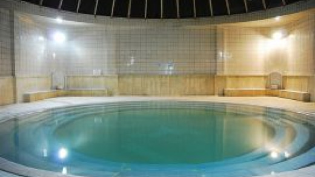
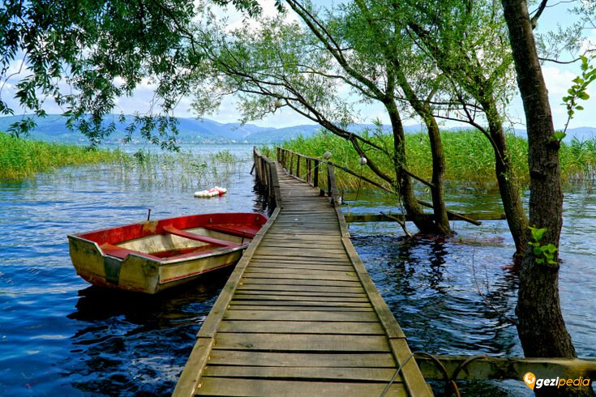
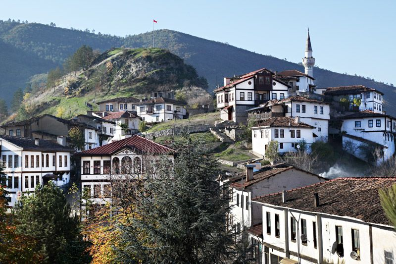

Acarlar Longozu, Sakarya'nın kuzeyinde Karasu ve Kaynarca ilçeleri arasında yer alan Türkiye'nin tek parça halindeki en büyük longoz ormanı. Genişliği 250–1250 m, uzunluğu 7,5 km'dir. Oluşumu açısından tipik bir kıyı set gölüdür.
Kuzuluk Kaplıcaları, Sakarya'nın Akyazı ilçesinde yer alan bir yeraltı su kaynağıdır. Gün yüzüne çıkan şifalı su ile sağlık turizminin baş kaynağı olan kaplıcalar hem rahatlatıcı hem de şifa verici özellikleri ile bilinir. ... Böylece hem konaklama yapıp hem de su kaynağından faydalanabilirsiniz.
Sapanca Gölü, Türkiye'nin Sakarya ve Kocaeli illerinde yer alan bir göldür. Sapanca, Serdivan ve Kartepe ilçelerinin sınırları içerisindedir. Sapanca Gölü, Doğu Marmara Bölgesi’nde, Sakarya kent merkezinin 12 km batısında, İzmit kentinin ise 27 km doğusunda yer alan tektonik kökenli bir tatlı su gölüdür.
Sakarya Taraklı Evler, Sakarya İli`nin en güney ucunda yer alan Taraklı, 19. YY. kalma Osmanlı Dönemi evleri ve tarihi yapılarıyla ünlü bir ilçedir. Sokak dokusu bozulmayan görünümü Taraklı Evleri`nin bulunduğu alan SİT alanı ilan edilmiş ve korumaya alınmıştır. Bu alanda 120 adet tarihi ev bulunmaktadır.